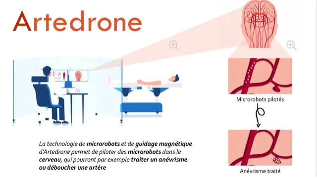
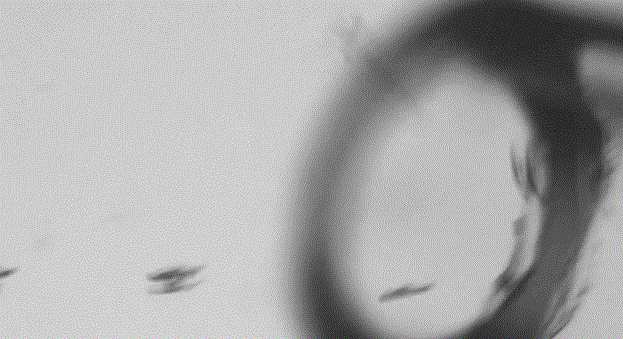

Les microrobots capables de réparer notre corps vont radicalement changer la chirurgie et les interventions médicales
Date : 12 mars 2021
Lorsque survient un AVC, un neuroradiologue n'a que deux à quatre heures pour déboucher l'artère bloquée par un caillot, sinon le tissu cérébral meurt.
Avec les microrobots, l'idée est similaire au guidage d'une petite voiture autonome sur une route départementale qui devra prendre plusieurs virages.
Leur fonctionnement :
le microrobot va se laisser d'abord porter par le flux sanguin. Vient ensuite l'étape de son pilotage lors des bifurcations. Avec l'imagerie médicale,
il sera possible de le diriger en couplant l'imagerie à un système de guidage magnétique. En clair, des aimants vont tourner à grande vitesse autour de votre crâne permettant d'orienter le robot pour remonter jusqu'au caillot

Une commercialisation entre 5 à 10 ans
Ils permettront de sectionner, de faire des sutures, de brûler un tissu, de déployer une prothèse ou un implant ou encore de renforcer un organe défectueux
Habituellement, ce type d'opération demande des gestes de chirurgie invasive complexes réservés à des chirurgiens très expérimentés. Caranx va permettre au chirurgien ou au médecin de faire de la chirurgie complexe de manière plus simple.
Conclusion :
Actuellement en phase de recherche et développement, les technologies liées à Artedrone et Caranx pourraient faire l'objet de premiers essais cliniques d'ici trois à cinq ans, mais il faudra patienter entre cinq voire dix ans avant leur commercialisation. «Ceci est un projet international, le temps peut paraître long, mais cette technologie reste très ambitieuse et devrait aboutir à des révolutions médicales à même de sauver des vies
